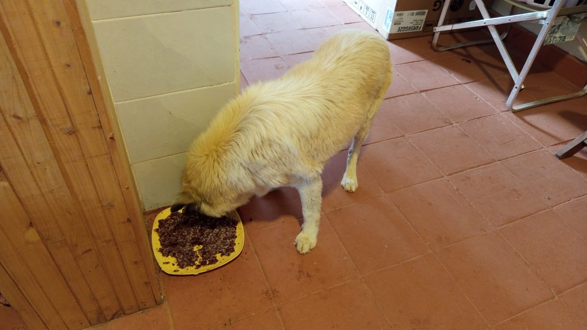

Mucheru World of Golf
Field civil and agronomic engineering operations across Mucheru World of Golf on Friday, 30th October 2026 delivered decisive progress in teebox platform finishing, surface drainage excavation, pipe hydraulic testing, and irrigation adjustments:
Golf Course Operational Highlights
The farm tractor hauled red soil from multiple stockpiles across the property to Teebox 7, where laborers spread and leveled the material across the platform. With Teebox 7 leveled, all championship teebox platforms across the course are now fully graded and ready for planting. Ground and plumbing crews performed finishing touches on pop-up sprinklers across teeboxes and greens. Excavation of the perimeter drainage trench at Green 6 continued, while technicians discharged test water through drainage pipes to confirm unobstructed gravity flow before backfilling trenches. Simultaneously, laborers shaped and leveled the base invert of the main drainage canal to secure continuous storm flow.
- Teebox 7 Red Soil Application & Tractor Haulage: The farm tractor and tipper trailer hauled red topsoil from several excavation stockpiles across the site to Teebox 7, where crews unloaded and distributed soil across the surface.
- Course-Wide Championship Teebox Leveling & Planting Readiness: With the leveling of Teebox 7 completed following red soil application, all 18 championship teebox platforms across the course are now shaped, leveled, and ready for turf planting.
- Green 6 Perimeter Drainage Trench Excavation: Manual digging and trench profiling continued along the perimeter drainage corridor at Green 6 to protect the rootzone sub-base and divert surface runoff.
- Gravity Water Flow Testing & Drainage Pipe Backfilling: Field crews tested gravity flow through installed drainage pipes using water to verify gradients and positive discharge, subsequently backfilling and covering the trench lines.
- Main Drainage Canal Invert Shaping & Leveling: Workers operated inside the deep main drainage canal corridor, leveling the base and trimming side slopes beneath access crossings to facilitate smooth gravity flow.
- Finishing Touches on Teebox & Putting Green Pop-Up Sprinklers: Plumbers and grounds crews carried out fine adjustments and finishing alignment touches on lateral pop-up sprinklers across teebox platforms and green surrounds.
18-hole putting green status audit showing the latest work completed and current condition for each green as of October 30, 2026:
| Green | Current Technical & Agronomic State | Milestone Status |
|---|---|---|
| Green 1 | Pop-up sprinklers confirmed functional and operational spray coverage verified (Oct 27). | Pop-Ups Functional |
| Green 2 | Pop-up sprinklers operational with pressurized spray coverage actively watering green (Oct 28). | Pop-Ups Functional |
| Green 3 | Electric solenoid valve installed on lateral line; river sand hauled to Green 13 (Oct 26). | Solenoid Installed |
| Green 4 | Pop-up sprinklers confirmed functional and operational spray coverage verified (Oct 27). | Pop-Ups Functional |
| Green 5 | Established mature championship putting green turfgrass watered with pop-up sprinklers (Oct 24). | Turf Irrigated |
| Green 6 Today | Perimeter drainage trench digging ongoing; tested gravity flow with water and backfilled with pipes (Oct 30). | Drainage Trenching Ongoing |
| Green 7 | HDPE irrigation supply trench cutting through Teebox 6 to Green 7 backfilled and covered (Oct 27). | Pipe Trench Covered |
| Green 8 | Electric solenoid valve installation and lateral pipe fitting completed on green (Oct 26). | Solenoid Installed |
| Green 9 | River sand hauled from stockpiles to Greens 12 and 16 for rootzone layering (Oct 29). | River Sand Hauled |
| Green 10 | River sand application completed across green bed with 2 tipper lorries of sand applied (Oct 29). | River Sand Applied |
| Green 11 | Pop-up sprinklers confirmed functional and operational spray coverage verified (Oct 27). | Pop-Ups Functional |
| Green 12 | River sand hauled from Green 9 stockpiled for green rootzone construction (Oct 29). | River Sand Delivered |
| Green 13 | Pop-up sprinklers confirmed functional and operational spray coverage verified (Oct 27). | Pop-Ups Functional |
| Green 14 | Saddle clamps installed on HDPE pop-up sprinkler pipes and perimeter trenches backfilled (Oct 23). | Saddle Clamps & Covered |
| Green 15 | Saddle clamps installed on HDPE pop-up sprinkler pipes and perimeter trenches backfilled (Oct 22). | Saddle Clamps & Covered |
| Green 16 | River sand hauled from Green 9 stockpiled for green rootzone construction (Oct 29). | River Sand Delivered |
| Green 17 | Electric solenoid valve installed on lateral line; HDPE sprinkler trenches backfilled (Oct 24). | Solenoid Installed |
| Green 18 | River sand spread and leveled across putting green rootzone layer over sub-base (Oct 28). | River Sand Applied |
18-hole championship teebox status audit tracking launch platform shaping, red soil leveling, and planting readiness as of October 30, 2026:
| Teebox | Current Technical & Earthwork State | Platform Status |
|---|---|---|
| Tee 1 | Irrigation pipe trenches excavated across platform along marked survey lines (Oct 26). | Pipe Trenches Dug |
| Tee 2 | Red soil applied halfway across platform; lateral pipe trenches backfilled (Oct 27). | Red Soil Halfway |
| Tee 3 | Red soil applied, spread, and leveled across platform; lateral pipe trenches covered (Oct 27). | Red Soil Leveled |
| Tee 4 | Irrigation pipe trenches excavated across platform along marked survey lines (Oct 26). | Pipe Trenches Dug |
| Tee 5 | Red soil spread and leveled across platform; lateral pipe trenches backfilled (Oct 27). | Red Soil Leveled |
| Tee 6 | Lateral irrigation pipe and pop-up sprinkler trenches backfilled and leveled (Oct 29). | Sprinkler Trenches Covered |
| Tee 7 Today | Red soil hauled by tractor, spread, and leveled; platform prepared and ready for planting (Oct 30). | Ready for Planting |
| Tee 8 | Lateral irrigation pipe and pop-up sprinkler trenches backfilled and leveled (Oct 29). | Sprinkler Trenches Covered |
| Tee 9 | Surplus red soil hauled to Teebox 7 for platform shaping and surface leveling (Oct 29). | Red Soil Hauled |
| Tee 10 | Irrigation pipe trenches excavated across platform along marked survey lines (Oct 26). | Pipe Trenches Dug |
| Tee 11 | Electric solenoid valve installed on lateral irrigation supply line (Oct 27). | Solenoid Installed |
| Tee 12 | Electric solenoid valve installed on lateral irrigation supply line (Oct 27). | Solenoid Installed |
| Tee 13 | Electric solenoid valve installed on lateral irrigation supply line (Oct 27). | Solenoid Installed |
| Tee 14 | Irrigation pipe trenches excavated across platform along marked survey lines (Oct 26). | Pipe Trenches Dug |
| Tee 15 | Irrigation pipe trenches excavated across platform along marked survey lines (Oct 26). | Pipe Trenches Dug |
| Tee 16 | Red soil applied, spread, and leveled; lateral irrigation pipe trenches excavated (Oct 26). | Red Soil & Trenches Dug |
| Tee 17 | Irrigation pipe trenches excavated across platform along marked survey lines (Oct 26). | Pipe Trenches Dug |
| Tee 18 | Irrigation pipe trenches excavated across platform along marked survey lines (Oct 26). | Pipe Trenches Dug |
Operations Agronomy & Engineering Synthesis
Course Agronomy & Earthwork Milestones: Red soil hauled by the farm tractor to Teebox 7, spread, and leveled; with Teebox 7 completed, all 18 championship teeboxes are now fully leveled and ready for turf planting; manual excavation of the perimeter drainage trench at Green 6 is ongoing; gravity water flow tested through PVC pipes before trench backfilling.
Hydraulic & Irrigation Infrastructure: Finishing touches conducted on teebox and green pop-up sprinklers across active zones; main drainage canal invert leveled and shaped for gravity water flow; lateral pipe and sprinkler trenches backfilled.
Field video recording documenting Friday, 30th October 2026 operations at Mucheru World of Golf:
Field video recording capturing daily course civil works, drainage trenching, and irrigation infrastructure progress at Mucheru World of Golf on Friday, 30th October 2026.
Sequential photographic field documentation showing red soil delivery, tractor haulage, teebox platform leveling, drainage trench backfilling, and canal invert shaping:

Teebox 7 — Red Soil Application & Distribution
Ground crew utilizing wheelbarrows and shovels to distribute large mounds of rich red topsoil across the Teebox 7 platform along the property boundary line.

Course Logistics — Tractor Hauling Red Soil to Teebox 7
Green farm tractor and red tipper trailer hauling red soil from stockpiles across the course, with laborers loading soil to stage Teebox 7 for grading.

Teebox Platform — Red Soil Spreading & Leveling
Labor crew using wheelbarrows, rakes, and shovels to level the red soil layer across the elevated teebox platform framed by mature acacia trees.

Teebox Construction — Platform Surface Grading
Workers grading and smoothing red topsoil across the expansive teebox playing surface, establishing the finished level ready for upcoming turf planting.

Championship Teebox — Finished Leveling for Planting
Longitudinal perspective down the finished red soil teebox platform showing uniform elevation and surface contouring prepared for grass establishment.

Drainage Network — Pipe Trench Backfilling & Compacting
Field crew using shovels and pickaxes to carefully backfill drainage trenches after verifying gravity water flow through installed PVC drainage pipes.

Main Drainage Canal — Invert Leveling & Shaping for Gravity Flow
Deep main drainage canal corridor viewed past a timber log crossing, showing laborers grading the trench invert to secure uninterrupted gravity discharge.
Chaka Farms
Farm, livestock, canine training, and grounds maintenance operations at Chaka Farms on Friday, 30th October 2026 maintained strict quantitative dairy reconciliation, veterinary health management, herd expansion, and estate upkeep:
Farm Operational Highlights
Dairy production achieved an 8.0 Litres gross harvest (5.0L morning + 3.0L evening), with 7.5 Litres dispatched for commercial sales (4.5L morning + 3.0L evening) and 0.5 Litre distributed for routine internal farm allocation to Maasai, achieving 100% quantitative accounting reconciliation strictly in Litres with zero discrepancy. In livestock news, the herd welcomed a new addition as cow Thabu gave birth to a healthy male calf. Additionally, a visiting veterinarian conducted a health check and administered treatment to Chalory's calf. Willy oversaw morning kennel cleaning, reinforced "paw" command conditioning, conducted morning and afternoon off-leash exercise walks, enforced kennel manners, and trimmed lawn grass across the compound and island. Margaret and Monica maintained general compound cleanliness and carried out minor weeding.
- 100% Reconciled Dairy Harvest in Litres: Morning and evening milking yielded 8.0 Litres gross harvest, completely accounted for by 7.5 Litres dispatched for commercial sales and 0.5 Litre allocated to Maasai with zero discrepancy.
- Quantitative Commercial Dispatch Ground Truth: Commercial sales absorbed 4.5 Litres from the morning harvest and 3.0 Litres from the evening milking, leaving a zero-variance balance sheet.
- Livestock Herd Expansion — Thabu Calving: Dairy cow Thabu successfully gave birth to a vigorous, healthy male calf on pasture, with maternal bonding and calf nursing established.
- Veterinary Examination & Treatment of Chalory's Calf: A professional veterinarian attended the farm to evaluate and administer medical treatment to Chalory's calf in the field.
- Canine Hygiene & "Paw" Command Obedience: Willy conducted thorough morning kennel stall cleaning and sanitation, reinforcing obedience where dogs demonstrated the "paw" command.
- Twice-Daily Off-Leash Walking & Kennel Manners: Handlers conducted energetic off-leash pack walking sessions both in the morning and afternoon, followed by structured doorway kennel manners training.
- Lawn Grass Trimming & Compound Upkeep: Willy and grounds staff operated mechanical trimmers across the compound lawn and central island, while Margaret and Monica weeded and cleaned grounds.
Official milking production and distribution reconciliation for Friday, 30th October 2026, accounting for all commercial sales and on-farm allocations:
| Category / Transaction | Morning Session | Evening Session | Daily Total |
|---|---|---|---|
| Gross Milk Harvested | 5.0 Litres | 3.0 Litres | 8.0 Litres |
| Commercial Milk Sales (Dispatched) | 4.5 Litres | 3.0 Litres | 7.5 Litres |
| Internal Farm Allocation — Maasai | 0.5 Litres | — | 0.5 Litres |
| Internal Farm Allocation — Gladys (Staff) | 0.0 Litres | 0.0 Litres | 0.0 Litres |
| Internal Farm Allocation — Goat Kids (Weaned) | 0.0 Litres | 0.0 Litres | 0.0 Litres |
| Total Volume Accounted For | 5.0 Litres | 3.0 Litres | 8.0 Litres (100% Reconciled) |
Dairy Accounting & Farm Reconciliation Note
Total gross milk harvested of 8.0 Litres (5.0L morning + 3.0L evening) is 100% accounted for by 7.5 Litres dispatched for commercial sales (4.5L morning sale + 3.0L evening sale) and 0.5 Litre in routine farm allocation to Maasai. In accordance with reporting rules, milk volumes are recorded strictly in Litres (never kilograms), and Maasai is designated strictly as Maasai with zero discrepancy. All yields reconcile perfectly with zero variance.
Daily behavioral conditioning routines, health protocols, canine socialization, and estate compound groundskeeping conducted on Friday, 30th October 2026:
- Morning Kennel Hygiene & Sanitization: Willy oversaw thorough morning kennel washing, stall cleaning, and feeding station sanitation, preserving high veterinary hygiene.
- Paw Command Obedience Observation: Dogs participated in individual obedience drills reinforcing the "paw" command with handler verbal approval and positive reinforcement.
- Twice-Daily Off-Leash Pack Exercise Walking: Handlers completed two off-leash pack exercise sessions — one in the morning and a second in the afternoon — across open farm grounds.
- Disciplined Kennel Manners Conditioning: Handlers reinforced disciplined doorway manners, conditioning dogs to hold patient sit-stays at open stall thresholds until release cues were given.
- Compound Lawn & Island Grass Trimming: Grounds staff operated petrol brush cutters trimming overgrown lawn grass across the main compound and central island area.
- General Compound Cleanliness & Farm Weeding: Margaret and Monica carried out comprehensive estate compound cleanliness, waste sweeping, and minor weeding across cultivation plots.
Field video recording documenting Friday, 30th October 2026 canine behavioral conditioning routines and kennel manners under Willy:
Structured kennel manners conditioning under Willy, verifying dogs demonstrating patience, calm stall manners, and prompt obedience to doorway release commands.
Sequential photographic field documentation showing bovine calving, veterinary calf treatment, and mechanical lawn grass trimming on the farm island:

Livestock Herd Expansion — Thabu & Newborn Male Calf
Dairy cow Thabu tending affectionately to her newborn black male calf resting on the green pasture grass following a successful delivery.

Veterinary Health Care — Treatment of Chalory's Calf
Visiting veterinarian and farm handler attending to Chalory's light-tan calf on the pasture, administering veterinary medication and health assessment.

Compound Maintenance — Grass Trimming at the Island
Groundskeeper in green protective overalls using a petrol brush cutter to trim lush lawn grass across the rolling landscape of the island.

Grounds Upkeep — Island Lawn Maintenance
Grounds crew operating mechanical string trimmers along the island lawn contours bordering mature acacia trees and tall perimeter reeds.
Kabete Residence
Civil structural works, mechanical compaction, waterproofing applications, cement logistics, water treatment equipment maintenance, and domestic pet care at Kabete Residence on Friday, 30th October 2026 achieved decisive project progress:
Residence Operational Highlights
Structural civil works reached a milestone with the complete casting of the SQ shutter concrete slab at the fireplace. Crews offloaded Blue Triangle cement bags from a pickup vehicle and carried them from the main drive into the site store. The concrete slab was compacted thoroughly using a mechanical poker vibrator to remove air space, followed by the application of Dr. Fixit LW+ 101 integral waterproofing to harden the concrete and begin the official 21-day curing cycle. In plumbing infrastructure, technicians inspected and adjusted the automatic transmission control head valve on the blue water filter cylinder under the tank tower. Domestic pet care included outdoor leashed exercise walks for Ajabu the Golden Retriever along the driveway and lawns followed by evening dinner, and resident cats Reo, Mocha, and Aiko all enjoying evening dinner together peacefully indoors.
- Cement Delivery Offloading & Storage Logistics: Laborers offloaded 50kg bags of Blue Triangle cement and tie wire coils from the pickup truck and carried them from the main drive to the secure site store.
- Mechanical Poker Vibration on Shutter Concrete Slab: Operators compacted the freshly poured concrete slab at the SQ fireplace using a mechanical poker vibrator, eliminating voids and consolidating the matrix.
- Dr. Fixit Integral Waterproofing Admixture Application: Crews applied Dr. Fixit Pidiproof LW+ 101 waterproofing tonic to enhance concrete density, prevent water penetration, and accelerate slab hardening.
- SQ Fireplace Shutter Slab Completion & 21-Day Curing Kickoff: Casting of the shutter concrete slab at the SQ fireplace was completed with a smooth surface finish, initiating the mandatory 21-day water curing period.
- Automatic Transmission Head Inspection on Water Filter: Plumbers inspected and adjusted the automatic control head valve on top of the blue vertical water treatment cylinder beneath the water tank tower.
- Domestic Pet Care — Leashed Walks & Evening Meals: Ajabu the Golden Retriever completed leashed exercise walks along the paved driveway and garden lawns followed by evening dinner; resident cats Reo, Mocha, and Aiko dined together indoors.
Sequential photographic field documentation showing cement offloading and haulage, poker vibration, Dr. Fixit waterproofing, completed SQ slab curing, water filter head inspection, and domestic pet care:

Materials Delivery — Offloading Cement from Pickup
Truck bed loaded with 50kg bags of Blue Triangle Portland Cement and a coil of steel tie wire being offloaded at the residence driveway for site works.

Material Logistics — Cement Staged for Site Store Transfer
Bags of Blue Triangle cement neatly stacked along the shaded driveway curb ready to be carried by site crew to the secure materials store.

Concrete Compaction — Poker Vibrator Consolidation
Construction worker inserting the mechanical poker vibrator hose into the freshly placed concrete slab at the SQ fireplace to eliminate voids and air pockets.

Structural Density — Mechanical Vibration of SQ Slab
Detailed view of the poker vibrator needle submerged in the wet concrete mix, compacting aggregates around the steel reinforcement mesh.

Waterproofing — Dr. Fixit Pidiproof LW+ 101 Treatment
Container of Dr. Fixit Pidiproof LW+ 101 integral waterproofing admixture used to increase concrete strength, delay corrosion, and harden the shutter slab.

SQ Fireplace — Completed Shutter Concrete Slab
Smoothly leveled, freshly cast concrete slab at the SQ fireplace showing starter rebar columns in place and uniform surface compaction across the deck.

Concrete Curing — 21-Day Hydration & Hardening Phase
Full perspective of the completed SQ concrete slab with surface water ponding initiated to commence the mandatory 21-day concrete curing process.

Water Systems — Automatic Transmission Head Inspection
Technician in blue overalls checking and adjusting the automatic transmission control head valve on top of the blue cylindrical water filter pressure vessel.

Water Treatment — Control Valve Servicing Under Tank Tower
Two technicians servicing the water filter automatic control valve assembly beneath the steel structural frame of the residence water storage tank tower.

Domestic Pet Care — Ajabu Driveway Exercise Walk
Ajabu the Golden Retriever on a patterned leash enjoying an active outdoor exercise walk along the estate brick-paved driveway under handler care.

Pet Wellbeing — Ajabu Outdoor Walk Along Lawn Border
Ajabu walking briskly along the lush green lawn and manicured shrub border during his daily afternoon exercise routine around the residence grounds.

Domestic Pet Care — Ajabu Indoor Evening Mealtime
Ajabu eating his nutritious evening dinner indoors from a plate on the terracotta-tiled floor, maintaining consistent daily domestic pet care.

Domestic Pet Care — Reo, Mocha & Aiko Dining Together
Resident cats Reo, Mocha, and Aiko dining side by side indoors from stainless steel bowls on the tiled floor in a peaceful evening meal routine.